Stepper motor 28BYJ-48 was disassembled to understand how it works. Observations are noted and theory of operation is deduced. Motor's reaction to a variety of pulse sequences are also noted.
Dimensions (units in mm):

Download STEP File (67KB)
Note: CAD model in the link above was reproduced and it is not the original data from the manufacturer.
Label at the back:
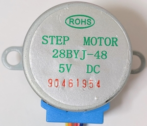28BYJ-48 is comprised of 3 parts:
Cross section view:
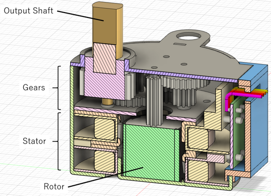Exploded view:
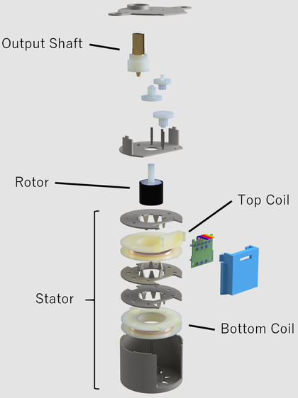The top compartment of 28BYJ-48 contains a series of gears. These gears transmit rotation from the rotor to the output shaft.

Gear train consists of 5 rotating parts, including the rotor (cylindrical part with black color) and the output shaft (part with gold color).
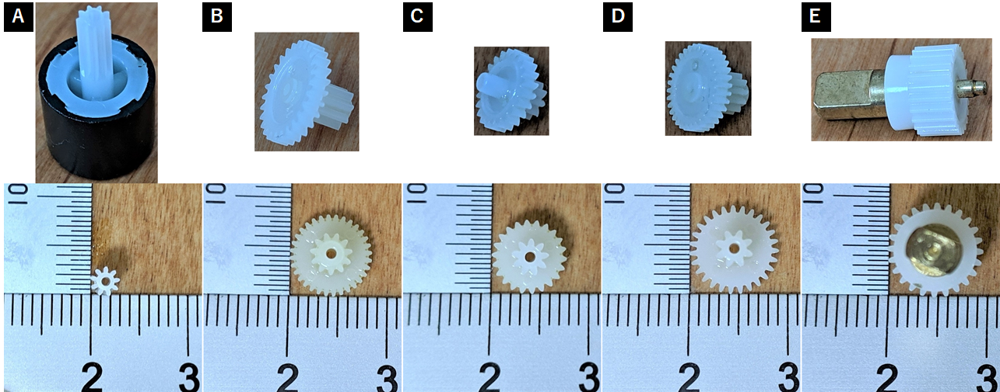Number of teeth was counted to determine the gear ratio. Tip diameter was measured using a caliper to have an idea of what gear modules are being used. Units are in mm.
| Part | Number of Teeth (N) | Measured Tip Diameter | Speculated Module (m) | Speculated Pitch Diameter (d=Nm) | Calculated Tip Diameter (d+2m) |
|---|---|---|---|---|---|
| A (rotor) | 9 | 2.80 | 0.25 | 2.25 | 2.75 |
| B | 32 | 8.25 | 8 | 8.50 | |
| 11 | 4.04 | 0.3 | 3.3 | 3.90 | |
| C | 22 | 7.47 | 6.6 | 7.20 | |
| 9 | 3.60 | 0.3 | 2.7 | 3.30 | |
| D | 27 | 9.10 | 8.1 | 8.70 | |
| 8 | 3.74 | 0.35 | 2.8 | 3.50 | |
| E (output shaft) | 24 | 9.16 | 8.4 | 9.10 |
From tooth counts above, gear ratio was found to be 1/64. Gear ratio may vary between manufacturers. For example, Adafruit sells a model that looks identical but rated at 1/16 gear ratio.
Module values were determined by selecting from a list of common gear module values (0.2, 0.25, 0.3, 0.35, 0.4) and then checking if the tip diameter calculated from the module is close to the measured tip diameter. In addition, different gears were meshed by hand to see which really mesh (only gears with the same module mesh).
There are odd number of gears so the direction of the rotor's rotation is the same as that of the output shaft.
Stator consists of two coils each sandwitched between two separate metallic plates. Therefore, there are 4 plates in total with the bottom-most plate also being the stepper motor's outer casing. The plates are attracted to magnets.
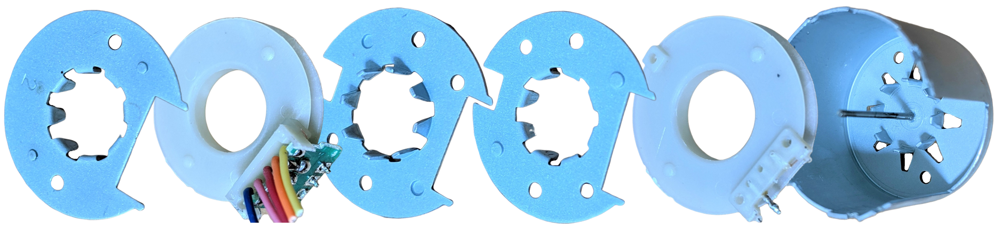 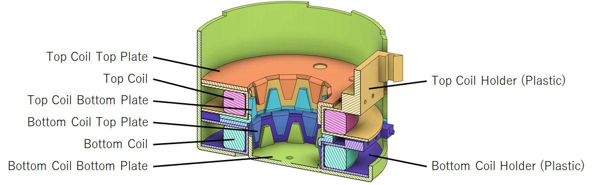Each plate has 8 claws bent towards the inside of the coil. The claws on each plate are offset by quarter pitch each.
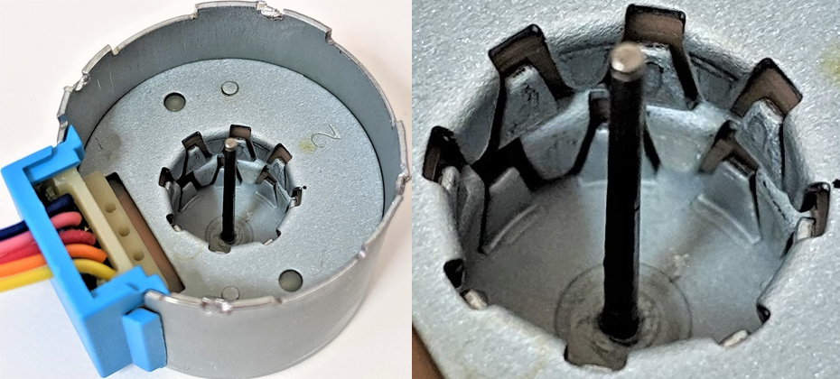Five wires come out of the stepper motor. These five wires are connected to a circuit board behind the blue plastic cover. Note: Wire color ordering may vary between manufacturers.

The outer two wires (blue and yellow) are connected to the bottom coil (coil farther away from the gear train). The inner two wires (pink and orange) are connected to the top coil (coil closer to the gear train). The center wire (red) is connected to both coils. The image below was taken from the bottom so it is flipped.

Each coil is wound such that their axis aligns with the rotor's axis of rotation. This is different from common stepper motors where the coils are aligned so that their axis points towards and perpendicular to the rotor's axis of rotation.
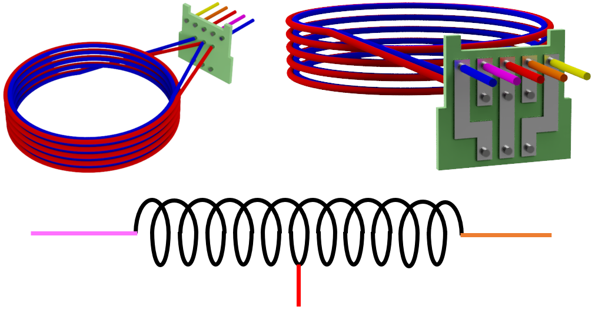Each coil is made of two wires wound the same number of turns. Two of the four ends of the wires are connected to the same pin on the circuit board such that this point becomes a center position of the entire coil. Center positions of the top and bottom coils are then connected together on the circuit board and then to the red wire. The simplified diagram above shows the connection for only the top coil (coil closer to the gears).
Rotor is a permanent magnet. Using a separate magnet, it was found that the rotor has 8 north-south pairs alternating around the axis of rotation.
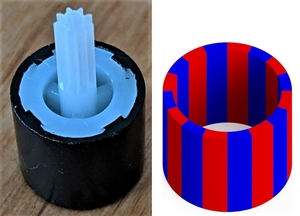Breaking the rotor reveals that the black material surrounding the white plastic is permanent magnet.
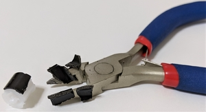Above findings show that 28BYJ-48 is a tin-can stepper motor (also called can-stack motor or claw-pole motor). The rotor is permanent magnet so it is a permanent magnet (PM) stepper motor. Electrical connections reveal it is a unipolar stepper motor.
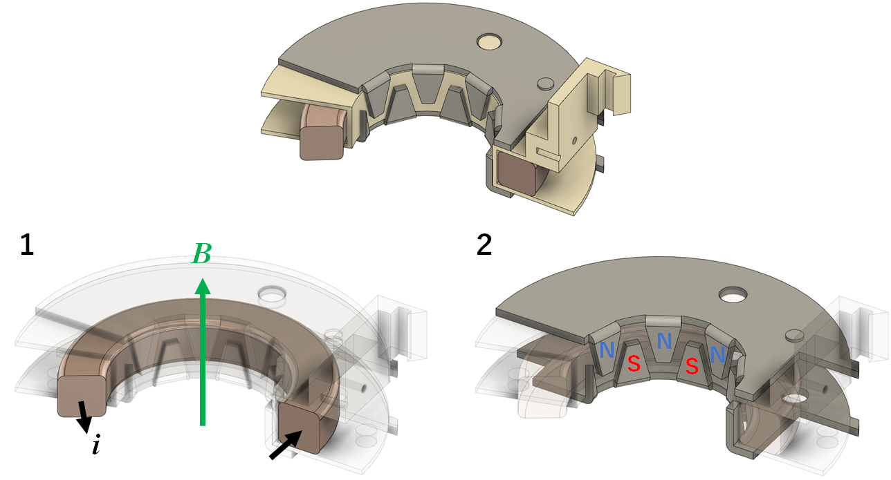Current applied through the coil magnetizes the claws. This creates an alternating north and south poles around the rotor. Since the rotor also has alternating poles (it is a permanent magnet) and the number of poles matches that of the stator, the rotor aligns itself with the claws of opposite polarity. Rotor rotation can be maintained by constantly switching the direction of current through the two coils.
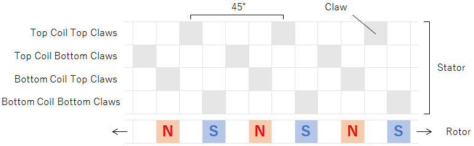The simplified diagram above shows positioning of the poles relative to each other as seen from the center of the motor and facing the inner surface of the stator. Moving right is equivalent to a clockwise motion and left for counter-clockwise rotation. There are 8 claws per layer so the pitch is 360/8 = 45 degrees. For each coil, the top and bottom claws are offset by half a pitch (45/2 = 22.5 degrees). The claws of the top and bottom coils are then offset by quater pitch (45/4 = 11.25 degrees).
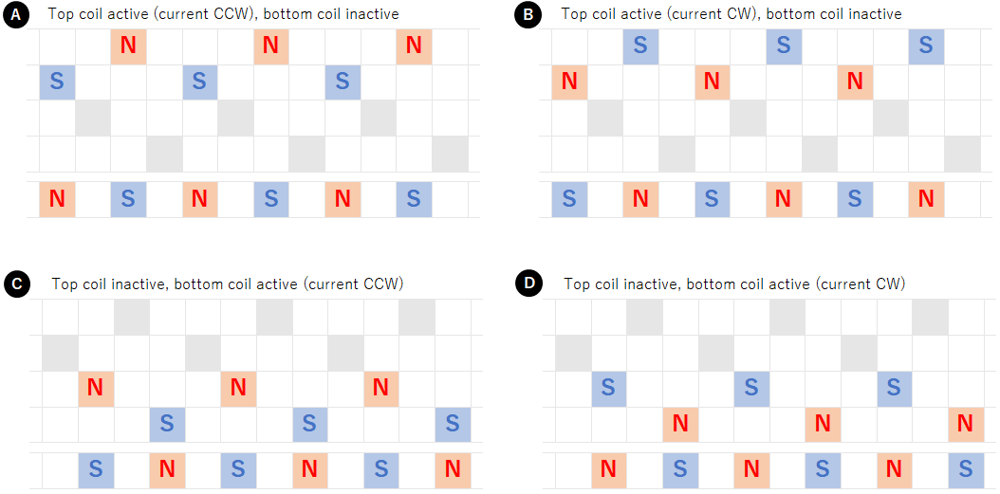If only a single coil is activated, there are 4 ways in which the claws can be magnetized. The rotor positions itself to align with the opposite pole. The rotor can be rotated consistently in clockwise direction by activating the coils in ADBC order.
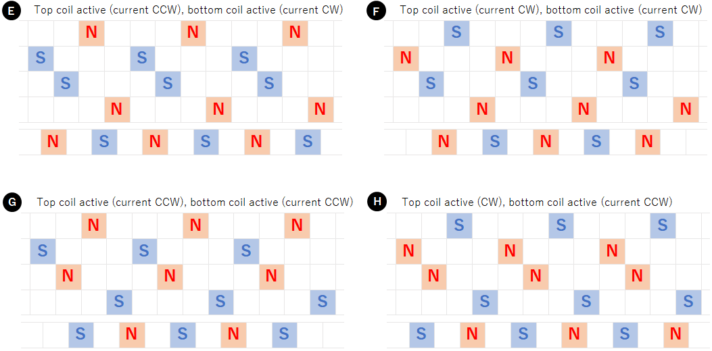If both coils are activated at the same time, there are again 4 possible ways to magnetize the claws. The rotor positions itself between the claw poles. The rotor can be rotated consistently in clockwise direction by activating the coils in EFHG order. Alternatively, it is also possible to use a combination of the above states, that is, to activate the coils in AEDFBHCG order to rotate the rotor clockwise.
To verify the mechanism described in the previous section, the stepper motor was driven with several signals.
The rotor was twisted by hand while 5V was applied to the coil(s). The rotor tries to maintain certain angles. These positions were recorded. To make it easier to see the rotor angle, a point on the rotor was marked with a black pen.
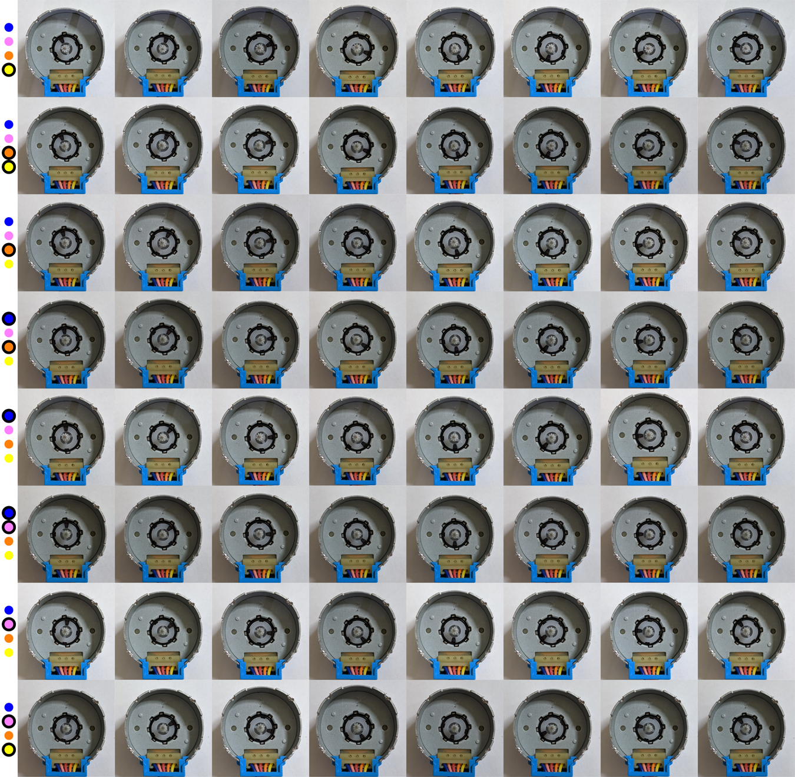Below is a summary of the above images. Corresponding diagram from the previous section is also shown.
| Image Row | Powered Wire(s) | Current Direction | Diagram | |
|---|---|---|---|---|
| Top Coil | Bottom Coil | |||
| 1 | Yellow | - | CCW | C |
| 2 | Yellow, Orange | CCW | CCW | G |
| 3 | Orange | CCW | - | A |
| 4 | Orange, Blue | CCW | CW | E |
| 5 | Blue | - | CW | D |
| 6 | Blue, Pink | CW | CW | F |
| 7 | Pink | CW | - | B |
| 8 | Pink, Yellow | CW | CCW | H |
The rotor always positioned itself in one of eight angles. These eight positions are slightly offset for every combination of current flow through the coils.
I noticed three points while doing the above. First, the motor warms up. Second, the current doubles when two coils are active (DC power supply showed 0.14A when one coil was powered and 0.27A when two coils were powered). Finally, the rotor's resistance to change position was stronger when two coils were active. This shows that using two coils produces more torque in exchange for more current draw.
Only one coil is activated at a time. The rotor's pole always points towards the stator's pole.
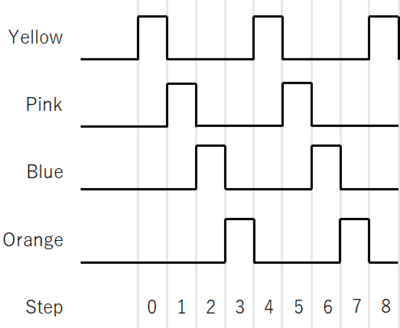Arduino UNO was connected to a button and ULN2003 module. Pressing the button once moves the stepper motor counter-clockwise by a single step. The current flows in the order: yellow, pink, blue, orange, and repeat (CBDA).
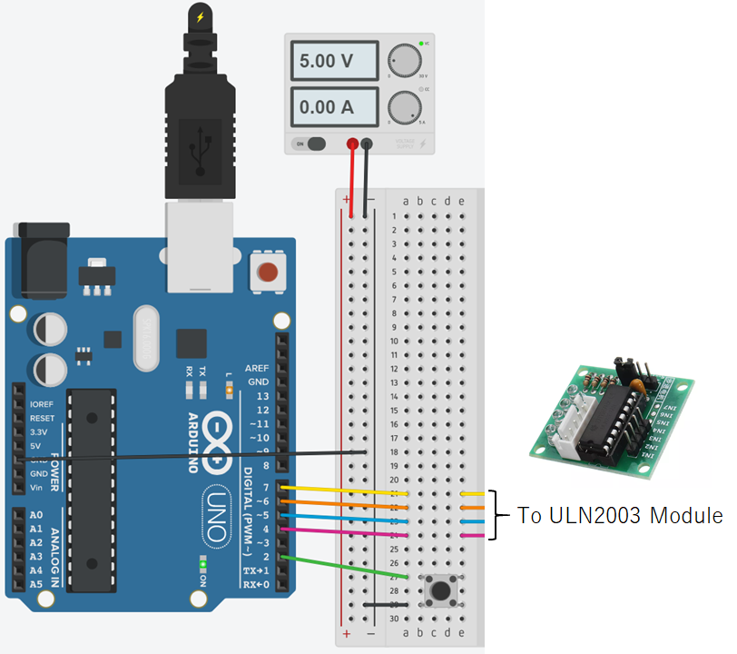Code was written in Atmel Studio and compiled with F_CPU=16000000UL symbol defined
so that _delay_ms() can be used.
#include <avr/io.h> // For DDRx, DDxn, PORTx, PORTxn, PINx, PINxn. #include <avr/sfr_defs.h> // For _BV(), loop_until_bit_is_clear(). #include <util/delay.h> // For _delay_ms(). int main(void) { // Configure pin direction. DDRD |= _BV(DDD7); // PD7 -> output (Arduino pin 7 - yellow) DDRD |= _BV(DDD6); // PD6 -> output (Arduino pin 6 - orange) DDRD |= _BV(DDD5); // PD5 -> output (Arduino pin 5 - blue ) DDRD |= _BV(DDD4); // PD4 -> output (Arduino pin 4 - pink ) DDRD &= ~(_BV(DDD2)); // PD2 -> input (Arduino pin 2 - button) // Configure input pin pull-ups. PORTD |= _BV(PORTD2); // PD2 -> enabled // Button is GND when pressed, else floating. // Drive output pins low. PORTD &= ~(_BV(PORTD7)); // PD7 (yellow) PORTD &= ~(_BV(PORTD6)); // PD6 (orange) PORTD &= ~(_BV(PORTD5)); // PD5 (blue) PORTD &= ~(_BV(PORTD4)); // PD4 (pink) while (true) { // Yellow PORTD &= ~(_BV(PORTD6)); // Drive PD6 low (orange) PORTD |= _BV(PORTD7); // Drive PD7 high (yellow) _delay_ms(200); // Prevent switch bounce. loop_until_bit_is_clear(PIND, PIND2); // Wait for button down. // Pink PORTD &= ~(_BV(PORTD7)); // Drive PD7 low (yellow) PORTD |= _BV(PORTD4); // Drive PD4 high (pink) _delay_ms(200); // Prevent switch bounce. loop_until_bit_is_clear(PIND, PIND2); // Wait for button down. // Blue PORTD &= ~(_BV(PORTD4)); // Drive PD4 low (pink) PORTD |= _BV(PORTD5); // Drive PD5 high (blue) _delay_ms(200); // Prevent switch bounce. loop_until_bit_is_clear(PIND, PIND2); // Wait for button down. // Orange PORTD &= ~(_BV(PORTD5)); // Drive PD5 low (blue) PORTD |= _BV(PORTD6); // Drive PD6 high (orange) _delay_ms(200); // Prevent switch bounce. loop_until_bit_is_clear(PIND, PIND2); // Wait for button down. } }
The rotor made a full rotation in exactly 32 button presses. DC power supply displayed a constant 0.16A. These show that the rotor makes a full rotation in 32 steps with only a single coil always active.
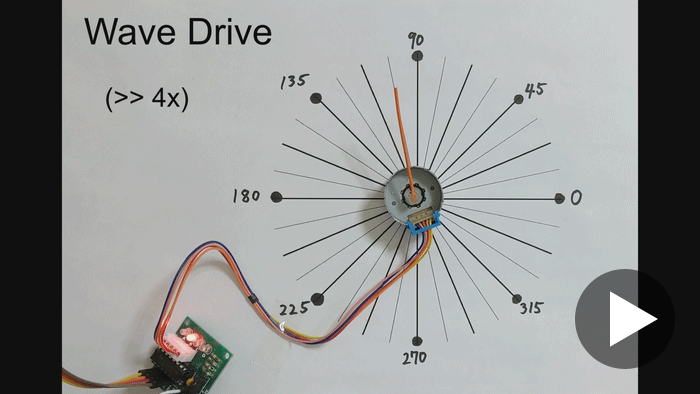Two coils are always active at the same time. The rotor's poles always point towards midpoint between two adjacent stator poles. This is the method used by Arduino's stepper library.
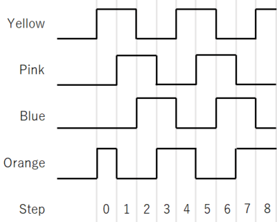The same setup as in single coil excitation was used. The rotor rotates counter-clockwise by a single step when the button is pressed once. The current flows in the order: yellow+orange, yellow+pink, pink+blue, blue+orange, and repeat (GHFE).
#include <avr/io.h> // For DDRx, DDxn, PORTx, PORTxn, PINx, PINxn. #include <avr/sfr_defs.h> // For _BV(), loop_until_bit_is_clear(). #include <util/delay.h> // For _delay_ms(). int main(void) { // Configure pin direction. DDRD |= _BV(DDD7); // PD7 -> output (Arduino pin 7 - yellow) DDRD |= _BV(DDD6); // PD6 -> output (Arduino pin 6 - orange) DDRD |= _BV(DDD5); // PD5 -> output (Arduino pin 5 - blue ) DDRD |= _BV(DDD4); // PD4 -> output (Arduino pin 4 - pink ) DDRD &= ~(_BV(DDD2)); // PD2 -> input (Arduino pin 2 - button) // Configure input pin pull-ups. PORTD |= _BV(PORTD2); // PD2 -> enabled // Button is GND when pressed, else floating. // Drive output pins low. PORTD &= ~(_BV(PORTD7)); // PD7 (yellow) PORTD &= ~(_BV(PORTD6)); // PD6 (orange) PORTD &= ~(_BV(PORTD5)); // PD5 (blue) PORTD &= ~(_BV(PORTD4)); // PD4 (pink) // Drive PD6 high (orange). PORTD |= _BV(PORTD6); while (true) { // Yellow, Orange PORTD &= ~(_BV(PORTD5)); // Drive PD5 low (blue) PORTD |= _BV(PORTD7); // Drive PD7 high (yellow) _delay_ms(200); // Prevent switch bounce. loop_until_bit_is_clear(PIND, PIND2); // Wait for button down. // Pink, Yellow PORTD &= ~(_BV(PORTD6)); // Drive PD6 low (orange) PORTD |= _BV(PORTD4); // Drive PD4 high (pink) _delay_ms(200); // Prevent switch bounce. loop_until_bit_is_clear(PIND, PIND2); // Wait for button down. // Blue, Pink PORTD &= ~(_BV(PORTD7)); // Drive PD7 low (yellow) PORTD |= _BV(PORTD5); // Drive PD5 high (blue) _delay_ms(200); // Prevent switch bounce. loop_until_bit_is_clear(PIND, PIND2); // Wait for button down. // Orange, Blue PORTD &= ~(_BV(PORTD4)); // Drive PD4 low (pink) PORTD |= _BV(PORTD6); // Drive PD6 high (orange) _delay_ms(200); // Prevent switch bounce. loop_until_bit_is_clear(PIND, PIND2); // Wait for button down. } }
Again, the rotor made a full rotation in exactly 32 button presses. The initial position was slightly offset from the initial position of the single coil excitation case as expected. DC power supply displayed a constant 0.32A. These show that the rotor makes a full rotation in 32 steps with two coils always active.
Step resolution is doubled by alternating between single-coil excitation and full-step drive.
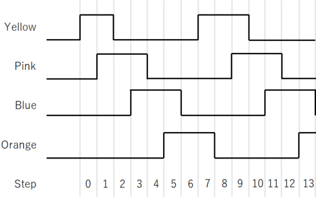The same setup is used again. The rotor rotates counter-clockwise by a single step (a single half-step) when the button is pressed once. The current flows in the order: CHBFDEAG and repeat.
#include <avr/io.h> // For DDRx, DDxn, PORTx, PORTxn, PINx, PINxn. #include <avr/sfr_defs.h> // For _BV(), loop_until_bit_is_clear(). #include <util/delay.h> // For _delay_ms(). int main(void) { // Configure pin direction. DDRD |= _BV(DDD7); // PD7 -> output (Arduino pin 7 - yellow) DDRD |= _BV(DDD6); // PD6 -> output (Arduino pin 6 - orange) DDRD |= _BV(DDD5); // PD5 -> output (Arduino pin 5 - blue ) DDRD |= _BV(DDD4); // PD4 -> output (Arduino pin 4 - pink ) DDRD &= ~(_BV(DDD2)); // PD2 -> input (Arduino pin 2 - button) // Configure input pin pull-ups. PORTD |= _BV(PORTD2); // PD2 -> enabled // Button is GND when pressed, else floating. // Drive output pins low. PORTD &= ~(_BV(PORTD7)); // PD7 (yellow) PORTD &= ~(_BV(PORTD6)); // PD6 (orange) PORTD &= ~(_BV(PORTD5)); // PD5 (blue) PORTD &= ~(_BV(PORTD4)); // PD4 (pink) // Drive PD7 high (yellow). PORTD |= _BV(PORTD7); while (true) { // Yellow PORTD &= ~(_BV(PORTD6)); // Drive PD6 low (orange) _delay_ms(200); // Prevent switch bounce. loop_until_bit_is_clear(PIND, PIND2); // Wait for button down. // Pink, Yellow PORTD |= _BV(PORTD4); // Drive PD4 high (pink) _delay_ms(200); // Prevent switch bounce. loop_until_bit_is_clear(PIND, PIND2); // Wait for button down. // Pink PORTD &= ~(_BV(PORTD7)); // Drive PD7 low (yellow) _delay_ms(200); // Prevent switch bounce. loop_until_bit_is_clear(PIND, PIND2); // Wait for button down. // Blue, Pink PORTD |= _BV(PORTD5); // Drive PD5 high (blue) _delay_ms(200); // Prevent switch bounce. loop_until_bit_is_clear(PIND, PIND2); // Wait for button down. // Blue PORTD &= ~(_BV(PORTD4)); // Drive PD4 low (pink) _delay_ms(200); // Prevent switch bounce. loop_until_bit_is_clear(PIND, PIND2); // Wait for button down. // Orange, Blue PORTD |= _BV(PORTD6); // Drive PD6 high (orange) _delay_ms(200); // Prevent switch bounce. loop_until_bit_is_clear(PIND, PIND2); // Wait for button down. // Orange PORTD &= ~(_BV(PORTD5)); // Drive PD5 low (blue) _delay_ms(200); // Prevent switch bounce. loop_until_bit_is_clear(PIND, PIND2); // Wait for button down. // Yellow, Orange PORTD |= _BV(PORTD7); // Drive PD7 high (yellow) _delay_ms(200); // Prevent switch bounce. loop_until_bit_is_clear(PIND, PIND2); // Wait for button down. } }
The rotor made a full rotation in exactly 64 button presses. The current in the DC power supply changed every step between 0.16A and 0.30A. These show that the rotor makes a full rotation in 64 steps and either one or both coils are active at a time.